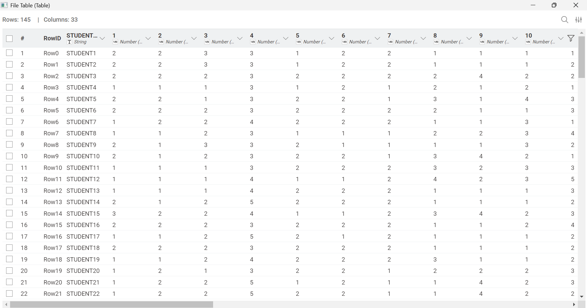
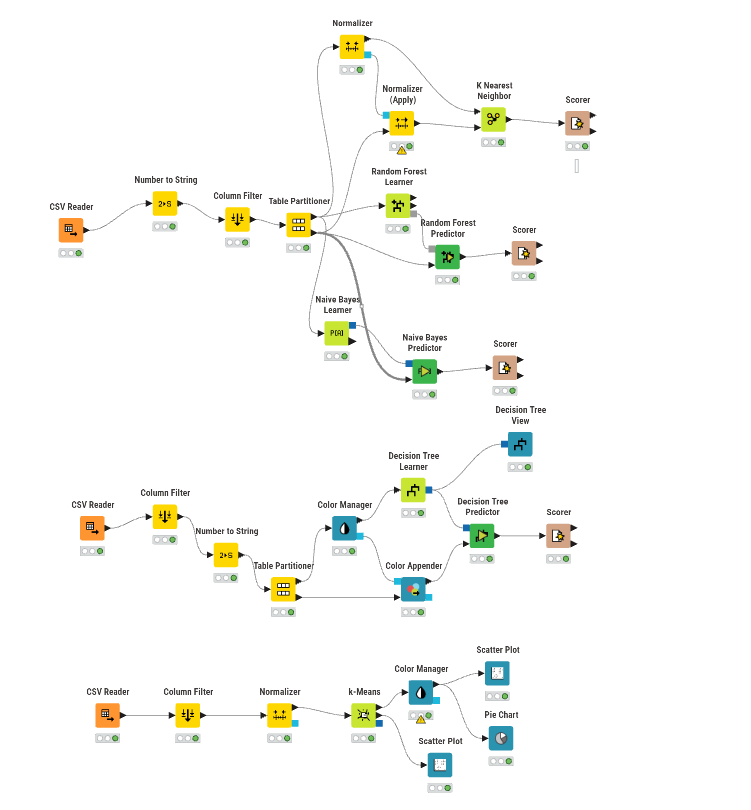
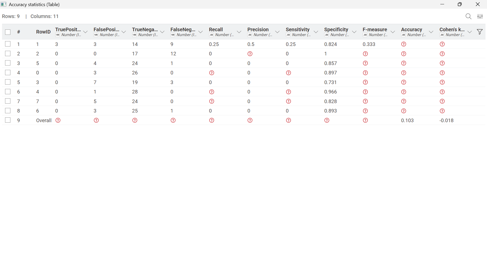
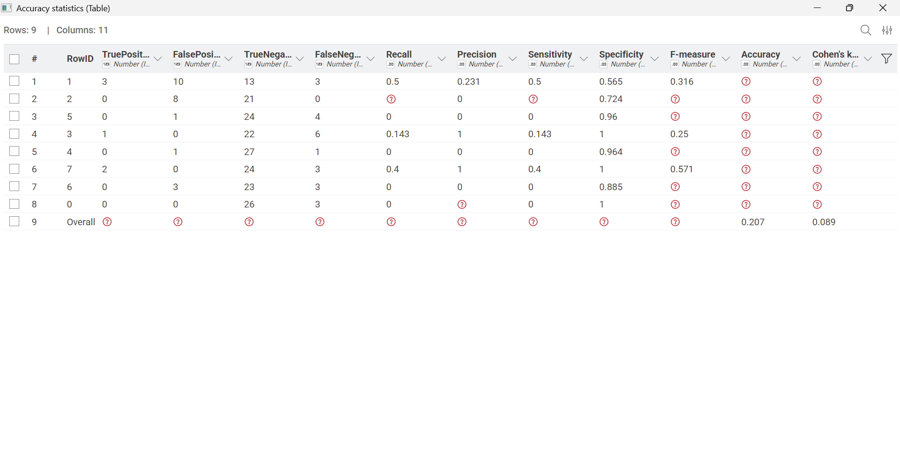
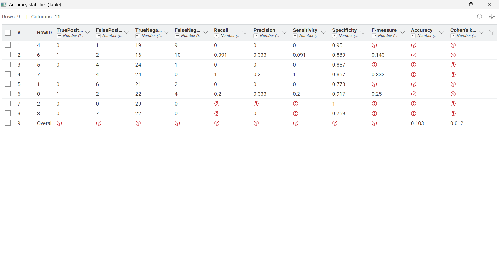
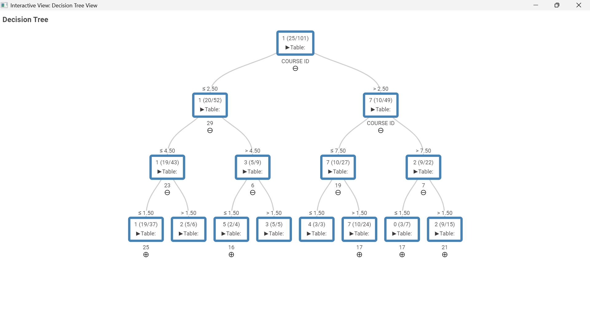
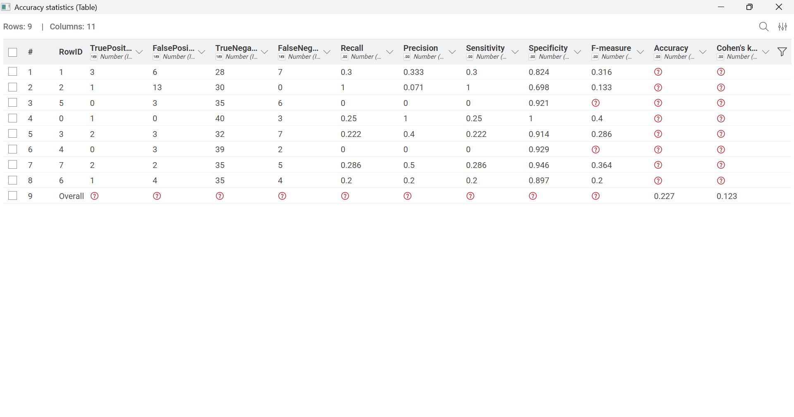

UAS#
Analisis Dataset Evaluasi Performa Mahasiswa Pendidikan Tinggi#
DATASET#
Dataset yang digunakan merupakan dataset Evaluasi Performa Mahasiswa Pendidikan Tinggi. Dataset ini dikumpulkan dari mahasiswa Fakultas Teknik dan Fakultas Ilmu Pendidikan. Tujuannya adalah untuk memprediksi nilai mahasiswa di akhir semester.
Informasi Kolom#
Dataset ini terdiri dari 33 kolom, yang terdiri dari 1 kolom kode identitas mahasiswa, 2-11 data adalah pertanyaan pribadi, 12-17. pertanyaan termasuk pertanyaan keluarga, dan pertanyaan yang tersisa termasuk kebiasaan pendidikan.
Keterangan tiap kolom
ID Pelajar
Usia Siswa (1: 18-21, 2: 22-25, 3: di atas 26)
Jenis kelamin (1: perempuan, 2: laki-laki)
Lulus tipe sekolah menengah: (1: swasta, 2: negara bagian, 3: lainnya)
Jenis beasiswa: (1: Tidak ada, 2: 25%, 3: 50%, 4: 75%, 5: Penuh)
Pekerjaan tambahan: (1: Ya, 2: Tidak)
Kegiatan artistik atau olahraga reguler: (1: Ya, 2: Tidak)
Apakah Anda memiliki pasangan: (1: Ya, 2: Tidak)
Total gaji jika tersedia (1: USD 135-200, 2: USD 201-270, 3: USD 271-340, 4: USD 341-410, 5: di atas 410)
Transportasi ke universitas: (1: Bus, 2: Mobil pribadi/taksi, 3: sepeda, 4: Lainnya)
Jenis akomodasi di Siprus: (1: sewa, 2: asrama, 3: bersama keluarga, 4: Lainnya)
Pendidikan ibu ™: (1: sekolah dasar, 2: sekolah menengah, 3: sekolah menengah, 4: universitas, 5: MSc., 6: Ph.D.)
Pendidikan ayah: ™ (1: sekolah dasar, 2: sekolah menengah, 3: sekolah menengah, 4: universitas, 5: MSc., 6: Ph.D.)
Jumlah saudara perempuan/saudara laki-laki (jika tersedia): (1: 1, 2:, 2, 3: 3, 4: 4, 5: 5 atau lebih)
Status orang tua: (1: menikah, 2: bercerai, 3: meninggal - salah satu dari mereka atau keduanya)
Pekerjaan ibu ™: (1: pensiunan, 2: ibu rumah tangga, 3: pejabat pemerintah, 4: karyawan sektor swasta, 5: wiraswasta, 6: lainnya)
Pekerjaan ayah: ™ (1: pensiunan, 2: pejabat pemerintah, 3: karyawan sektor swasta, 4: wiraswasta, 5: lainnya)
Jam belajar mingguan: (1: Tidak ada, 2: <5 jam, 3: 6-10 jam, 4: 11-20 jam, 5: lebih dari 20 jam)
Frekuensi membaca (buku/jurnal non-ilmiah): (1: Tidak ada, 2: Kadang-kadang, 3: Sering)
Frekuensi membaca (buku/jurnal ilmiah): (1: Tidak Ada, 2: Kadang-kadang, 3: Sering)
Kehadiran seminar/konferensi yang berkaitan dengan departemen: (1: Ya, 2: Tidak)
Dampak proyek/aktivitas Anda terhadap kesuksesan Anda: (1: positif, 2: negatif, 3: netral)
Kehadiran ke kelas (1: selalu, 2: kadang-kadang, 3: tidak pernah)
Persiapan ujian tengah semester 1: (1: sendirian, 2: dengan teman, 3: tidak berlaku)
Persiapan ujian tengah semester 2: (1: tanggal terdekat dengan ujian, 2: secara teratur selama semester, 3: tidak pernah)
Membuat catatan di kelas: (1: tidak pernah, 2: kadang-kadang, 3: selalu)
Mendengarkan di kelas: (1: tidak pernah, 2: terkadang, 3: selalu)
Diskusi meningkatkan minat dan kesuksesan saya dalam kursus: (1: tidak pernah, 2: kadang-kadang, 3: selalu)
Flip-classroom: (1: tidak berguna, 2: berguna, 3: tidak berlaku)
Nilai rata-rata kumulatif pada semester terakhir (/4.00): (1: <2.00, 2: 2.00-2.49, 3: 2.50-2.99, 4: 3.00-3.49, 5: di atas 3.49)
Nilai rata-rata kumulatif yang diharapkan dalam kelulusan (/4.00): (1: <2.00, 2: 2.00-2.49, 3: 2.50-2.99, 4: 3.00-3.49, 5: di atas 3.49)
ID Kursus
Kelas KELUARAN (0: Gagal, 1: DD, 2: DC, 3: CC, 4: CB, 5: BB, 6: BA, 7: AA)

Knime#

Data Preprocessing#
Memfilter kolom yang tidak akan digunakan dalam analisis.
Mengubah tipe data grade supaya berubah menjadi string agar dijadikan target.
Membagi data menjadi data testing dan data training dengan menggunakan node tabel partisioner.
KNN (K Nearest Neighbor)#
Normalizer & Normalizer (Apply): Sebelum masuk ke KNN, data training 80% dinormalisasi menggunakan skala Min-Max (0.0 sampai 1.0). Rumus skala ini kemudian diterapkan pada data testing 20% lewat node Normalizer (Apply). Normalisasi ini wajib karena KNN bekerja berdasarkan perhitungan jarak geometris (Euclidean Distance).
K Nearest Neighbor: Node tunggal yang langsung memperhitungkan kedekatan pola. Berdasarkan konfigurasi, model mengecek sejumlah \(K\) tetangga terdekat (misal \(K=5\) atau angka ganjil lainnya) untuk menentukan prediksi
GRADEmelalui voting mayoritas.
Hasil KNIME#

Hasil akurasi dari predictor KNN adalah 0.103
Random Forest#
Random Forest Learner: Menerima data training 80%. Node ini membangun sebuah “hutan” yang berisi ratusan pohon keputusan (Ensemble Learning) secara acak. Atribut
STUDENT IDdikeluarkan, dan kolomGRADEdisetel sebagai Target Column.Random Forest Predictor: Memanfaatkan kumpulan pohon keputusan yang sudah matang untuk menguji data sisa 20% dan menghasilkan kolom baru bernama
Prediction (GRADE)beserta nilai probabilitas keyakinannya.
Hasil KNIME#

Hasil akurasi dari predictor Random Forest adalah 0.207
Naive Bayes#
Naive Bayes Learner: Mempelajari data 80% menggunakan Teorema Probabilitas Bayes. Node ini menghasilkan tabel statistik probabilitas kondisional (Bayes Attribute Statistics), yang mengasumsikan setiap indikator kuesioner berdiri sendiri (independen) dalam memengaruhi peluang kemunculan nilai
GRADE.Naive Bayes Predictor: Mencocokkan kombinasi probabilitas kuesioner mahasiswa pada data pengujian untuk menghasilkan tebakan kelompok nilai akhir yang paling berpeluang besar.
Hasil KNIME#

Hasil akurasi dari predictor Naive Bayes adalah 0.103
Decision Tree#
Decision Tree Learner: Melatih data latih untuk membentuk satu pohon keputusan terstruktur tunggal berdasarkan perhitungan tingkat keuntungan informasi (Information Gain atau Gini Index) tertinggi dari setiap variabel kuesioner.
Decision Tree Predictor: Menerapkan aturan percabangan aturan (rules) pohon keputusan tersebut untuk menebak target data uji.
Gambar Decision Tree#

Berdasarkan pengujian menggunakan algoritma Random Forest, performa akademik mahasiswa (GRADE) tidak hanya dipengaruhi oleh faktor internal mahasiswa itu sendiri. Model mendeteksi bahwa karakteristik mata kuliah (COURSE ID) dan rekam jejak akademik sebelumnya (IPK Semester Lalu) adalah dua jangkar utama penentu keberhasilan. Selain itu, faktor eksternal seperti lingkungan keluarga (pendidikan ibu dan jumlah saudara) serta atensi harian di kelas (kebiasaan mendengarkan) turut memegang peranan penting dalam membentuk hasil evaluasi akhir mahasiswa.
Hasil KNIME#

Hasil akurasi dari predictor Decision Tree adalah 0.207
Kesimpulan#
Karakteristik Data dan Kompleksitas Target Kuliah Dataset terdiri dari 145 sampel mahasiswa dengan 30 fitur indikator kuesioner. Dalam pemodelan Supervised Learning, penggunaan target GRADE yang memiliki 8 variasi kelas (skala 0 sampai 7) menghadirkan tingkat kompleksitas klasifikasi (multi-class classification) yang sangat tinggi. Hal ini dibuktikan melalui pengujian pada node Scorer, di mana sebaran tebakan model rentan mengalami pergeseran (meleset) ke kelas-kelas tetangganya karena batas pemisah antar-kelas nilai yang sangat rapat.
Faktor Penentu Utama Keberhasilan Akademik (Feature Importance) Melalui analisis Attribute Importance pada algoritma Random Forest, ditemukan bahwa performa akademik mahasiswa tidak ditentukan oleh satu faktor tunggal, melainkan kombinasi dinamis antara faktor institusional, rekam jejak, dan lingkungan:
COURSE ID (Mata Kuliah): Menjadi variabel paling dominan (bobot tertinggi ~0.081), membuktikan bahwa tingkat kesulitan atau karakteristik spesifik dari setiap mata kuliah memiliki pengaruh paling besar terhadap perolehan nilai akhir.
IPK Semester Lalu (Kolom 29): Menjadi prediktor terkuat kedua (~0.065), menunjukkan adanya konsistensi linear pada performa akademik mahasiswa dari semester sebelumnya.
Faktor Keluarga & Atensi Kelas: Latar belakang pendidikan ibu (Kolom 11), jumlah saudara kandung (Kolom 13), serta fokus perilaku mahasiswa dalam mendengarkan penjelasan di dalam kelas (Kolom 26) turut memegang kontribusi krusial dalam membentuk hasil capaian mahasiswa.